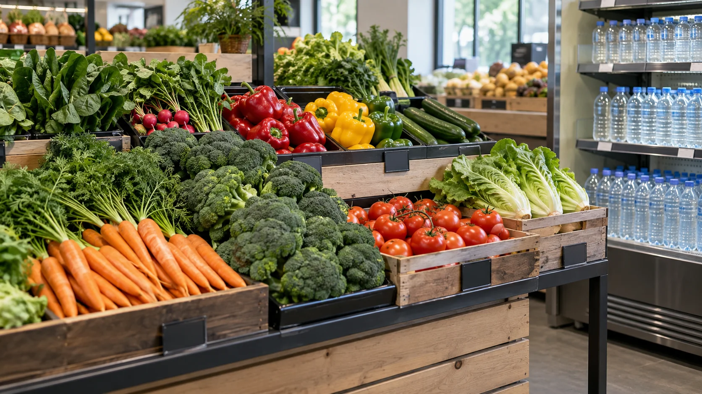
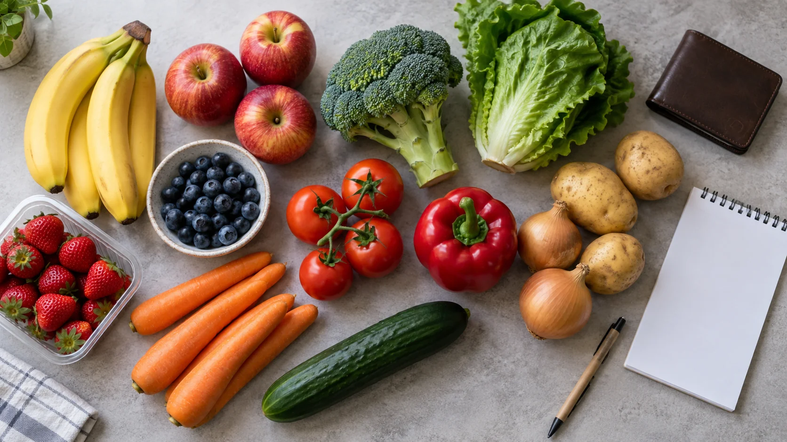
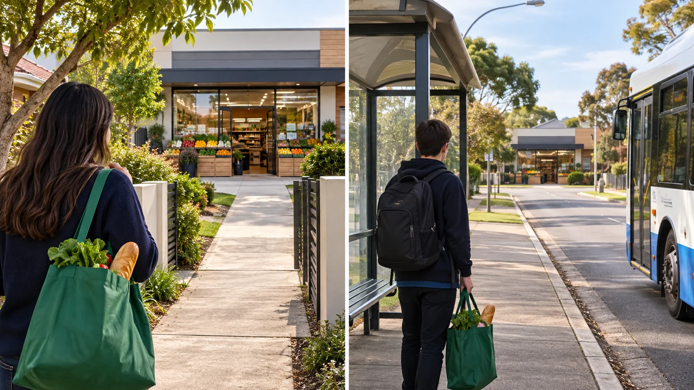
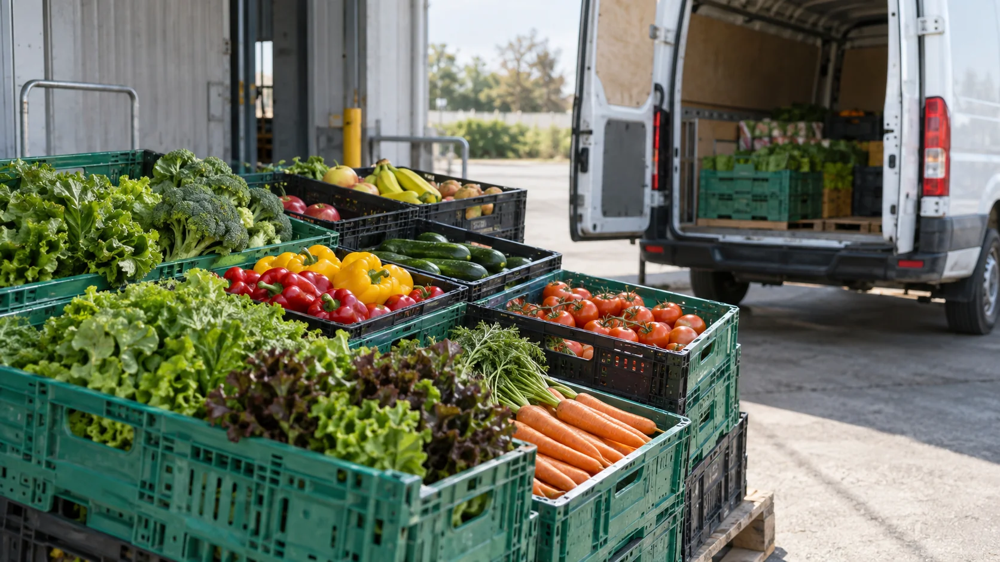
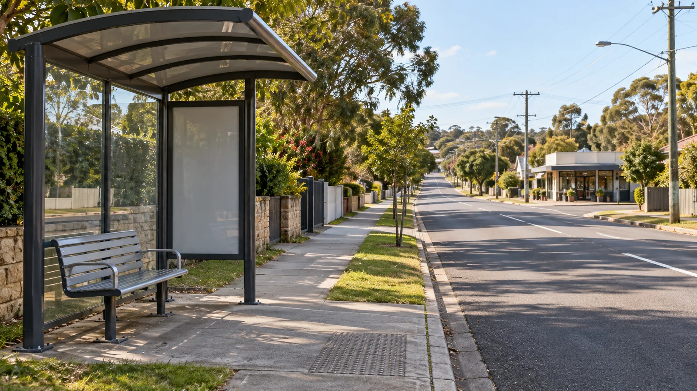
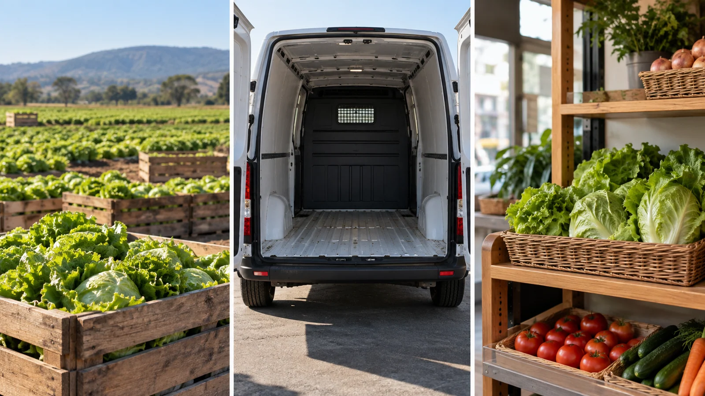
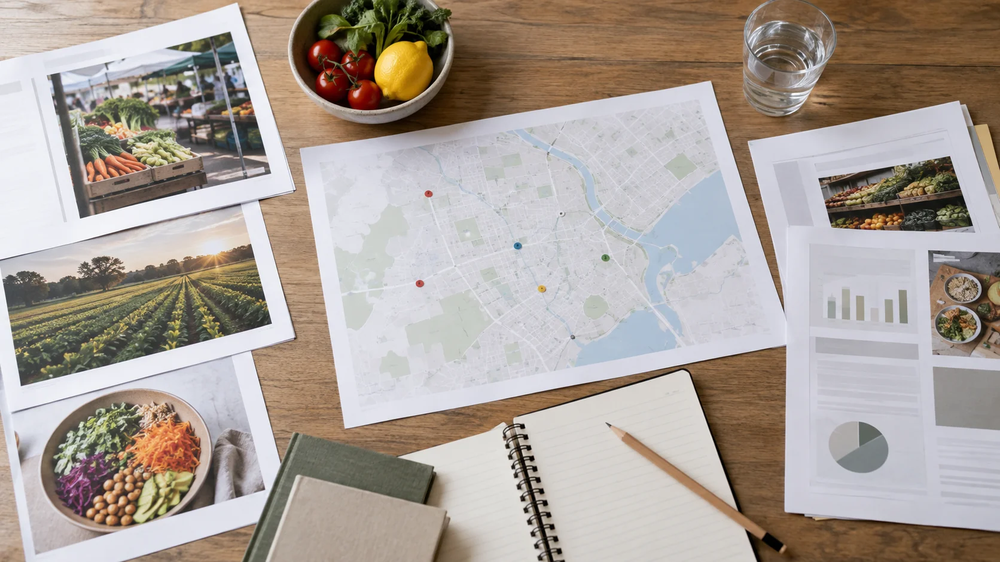
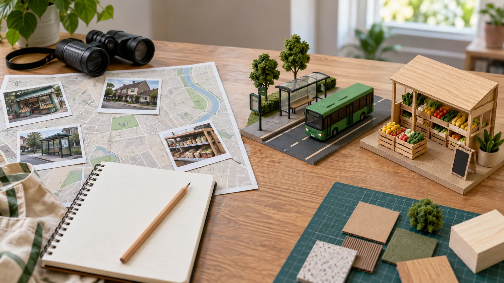

Module 1 of 4 · Term 1
Food Equity
Food equity asks whether people can reliably obtain food and safe water that meet their needs. Use evidence to examine barriers and judge responses without making assumptions about people’s choices.
Loading progress…
Notice: What can this still life show, and what would you need evidence to learn?
Open larger ↗{kind=link}
Module 1 PowerPoint
Use the matching slides to preview and review the three learning sections.
Section 1.1
What food equity means
A full shop shelf does not guarantee that everyone can eat well.
Food equity is about fair opportunity to obtain enough safe, nutritious and suitable food. Food security describes reliable physical and economic access to food that supports health and wellbeing. These ideas are related, but they ask different questions: a food system can produce plenty overall while particular people remain unable to access what they need. A person’s diet is shaped by more than preference or willpower. Money, location, transport, time, storage and the foods that a community recognises as appropriate all matter. The Food equity focus area in this course asks you to examine these conditions rather than judge individuals.
Availability means that food exists in shops, markets or other supply channels. Access means that a person can actually get it. A supermarket might stock fresh produce, yet the trip there could require a long journey or a fare a household cannot spare. Food can also be available and affordable on one day but unreliable after a lost shift, a delivery disruption or an extreme weather event. Reliability matters because a healthy food pattern depends on more than one lucky purchase. The question is whether people can keep obtaining suitable food over time.
Food quality and suitability also matter. Australia’s dietary guidance recommends variety from five food groups, but a food choice may need to fit a person’s culture, beliefs, allergies or other individual needs. A cheap item is not automatically an equitable solution if it provides little useful nutrition or cannot be used by the people it is intended for. Equally, a nutritious product does not solve a problem when its price or travel cost keeps it out of reach. Students should compare the whole situation: choice, cost, distance, quality, dignity and continuity.
Consider two households living near the same shop. One has reliable income, a vehicle and space to store food; the other has irregular work, no car and limited storage. Identical shelf prices can produce very different real access. This is why an equity response may remove a barrier, such as transport, rather than simply tell people what to buy. Evidence about the barrier should come before a proposed solution. The aim is fair access, not identical meals for everyone.

Notice: What remains unknown about price, travel and suitability?
Open larger ↗{kind=link}

Notice: What information would help someone make a suitable choice?
Open larger ↗{kind=link}
A fruit shop may be close in kilometres but effectively distant if there is no affordable transport. Compare travel time and cost as well as the shelf price before judging access.
Explore the evidence

Notice: Which travel facts would make this comparison fair?
Open larger ↗{kind=link}
Video candidate · final check pending
Food insecurity a hidden problem in Australia, experts say · ABC News Australia

Watch from 00:02 to 00:45. Pause and answer the question below.
If the player is blank or unavailable, use the YouTube link or follow the non-video path below.
Watch for: What barriers show that food equity involves more than whether a shop has food?
If you cannot watch: Read the two household journeys beside this section, compare transport and total food cost, then answer the same question using the food access diagram.
See all course videos →Non-video pathway: read the availability/access comparison and trace how the same shop changes for two households with different transport and storage.
- Same shop, different journey: Household A has a regular bus and room to store food. Household B has an infrequent bus and little storage. Which barriers change the real cost of obtaining suitable food?
Learning activity 1.1 · 10 questions + written response
Formative learning evidence. Choose an option to see feedback and use the help link if needed.
Written challenge
Explain how two people can face different food access even when they live near the same well-stocked shop. Recommend one response to a documented barrier and justify why it could improve equity.
Use these prompts to build one response:- Distinguish food availability from real access in your example.
- Identify at least two conditions that could create different experiences.
- Choose one barrier that evidence could test and propose a targeted response.
- Explain how you would check whether access improved over time.
Use at least two developed sentences so this response counts towards your section progress.
Success looks like:- Uses food equity and food security accurately without blaming people.
- Connects a specific barrier, response and measurable sign of improvement.
Section 1.2
Barriers to food and water
Food access depends on connected systems, including income, transport and safe water.
A barrier is a condition that makes suitable food harder to obtain or use. Cost can be the shelf price, but also transport, electricity, time away from paid work or the equipment needed to store and prepare food. Limited transport may reduce choice or make frequent trips difficult. A person in a remote area can face different supply conditions from a person near several shops. These are patterns to investigate, not reasons to assume that every person in one place has the same experience. Good analysis names the barrier and gathers evidence about its size.
Supply can also change. Extreme weather, disrupted delivery or price changes may affect what reaches shops and what households can buy. A household with spare money and storage may be able to adapt; another household may have less room to respond. This means food equity includes resilience: how well access continues when circumstances change. A short-term shortage and a long-term affordability problem need different responses. Mapping where a disruption occurs helps avoid treating all barriers as if they were the same.
Safe water is part of this picture. Water is needed for drinking and food production, and reliable safe water supports health. The World Health Organization describes equitable drinking-water access in terms of safety, affordability and availability when needed. If water is distant, unreliable or unaffordable, food choices and daily life are affected too. Water problems cannot be reduced to how much rain falls: infrastructure, management and cost also shape access. Comparing communities requires attention to these connected factors, and care not to treat a global statistic as a fact about a specific Australian community.
Desalination is one possible water-supply response. It can turn seawater or brackish water into drinking water, but a proposal still has to be judged against local needs, energy use, cost, environmental effects and water-quality management. It does not by itself make food affordable or improve transport. Another location might need a different mix of responses. The useful question is: which barrier does an intervention address, who benefits, and what other effects must be checked? A fair solution may combine several actions and should be reviewed with the people affected.

Notice: What could affect this journey before food reaches a customer?
Open larger ↗{kind=link}

Notice: What would you need to know about services and distance here?
Open larger ↗{kind=link}
If a storm interrupts deliveries, compare a short-term supply response with a longer-term plan for reliable transport. The two actions address different time scales.
Explore the evidence

Notice: Which stage would you investigate if a shop shelf were empty?
Open larger ↗{kind=link}
Video candidate · final check pending
Remote communities waiting for federal government food support creating own solutions · ABC News Australia

Watch from 00:21 to 00:58. Pause and answer the question below.
Viewing boundary: Stop at 00:58. The rest of this report is outside this lesson.
If the player is blank or unavailable, use the YouTube link or follow the non-video path below.
Watch for: Which price or income barrier is shown, and what extra local evidence would you need before making a wider claim?
If you cannot watch: Read the delivery-delay case and the adjacent diagram, identify the observable barrier, then list the evidence still missing about price, income and alternatives.
See all course videos →Non-video pathway: follow the systems map from source to household, then identify where one interruption changes access.
- Supply example: a delivery delay leaves one shop short of fresh food for three days. List what you can observe, then what you would need to know about affordability and other shops.
Open Food Equity classwork ↗ (school access may be required)
Learning activity 1.2 · 10 questions + written response
Formative learning evidence. Choose an option to see feedback and use the help link if needed.
Written challenge
A community reports unreliable access to affordable food and safe water after repeated supply disruptions. Compare two possible responses, explain what each would address, and evaluate what evidence is needed before recommending one or a combination.
Use these prompts to build one response:- Separate the food and water barriers and identify any links between them.
- Compare a short-term response with a longer-term response.
- Consider cost, reliability, who benefits and possible trade-offs.
- State the local evidence needed to justify and review the recommendation.
Use at least two developed sentences so this response counts towards your section progress.
Success looks like:- Explains how connected barriers affect equitable access without unsupported local claims.
- Makes a reasoned recommendation that matches each response to an identified barrier.
Section 1.3
Investigate and respond
A useful food equity response begins with a precise question and ends with evidence of change.
Investigation starts by defining whose access is being considered, what food or water need matters, and over what period. A claim such as ‘this area has good food access’ is too broad on its own. Better questions ask how long a journey takes, whether nutritious and suitable options are regularly available, and how total costs compare with the resources people have. Use a mix of evidence: public data can reveal a pattern, a map can show distance, and respectful consultation can reveal obstacles that the map misses. Protect people’s privacy and avoid collecting personal stories that the investigation does not need.
Next, distinguish observation from inference. A shop being present is an observation; concluding that everyone can use it is an inference requiring more evidence. Older figures may explain a historical argument but should not be presented as current conditions. Compare the date, source, geographical scale and definition behind each figure. A national food-insecurity figure cannot automatically describe one town. Evidence may also be incomplete or conflicting. State that uncertainty openly rather than inventing precision.
An effective response should match a demonstrated barrier. If suitable food is available but travel is the problem, a transport or delivery option could be tested. If food is accessible but too expensive, a price or income-related response may be more relevant. If availability is unreliable, supply arrangements and storage might matter. A response designed with the affected community is more likely to fit actual needs and preserve dignity than one chosen from assumptions. It should also be realistic about the people and organisations needed to carry it out.
Evaluation asks whether conditions improved, for whom and for how long. Possible indicators include a shorter journey, more reliable stock, a lower total cost to obtain suitable food, or feedback that choices now fit people’s needs. Each indicator has a limit: a lower shelf price may hide travel cost, while more deliveries may still miss some households. Review unintended effects and revise the response if necessary. A strong conclusion describes what the evidence supports, what remains unknown and the next question worth testing.

Notice: Which real sources would you check before making a recommendation?
Open larger ↗{kind=link}
A map shows a supermarket 2 km away. Before calling it accessible, investigate the route, transport, opening hours, total cost and whether suitable food is consistently stocked.
Explore the evidence

Notice: What evidence would you seek before testing a response?
Open larger ↗{kind=link}
Video candidate · final check pending
How does a food bank work? | ABC News · ABC News Australia

Watch from 00:00 to 00:56. Pause and answer the question below.
If the player is blank or unavailable, use the YouTube link or follow the non-video path below.
Watch for: What does a food bank do, and which causes of food inequity would still need to be investigated?
If you cannot watch: Use the section’s claim–evidence example and response diagram; separate the immediate food-distribution response from evidence needed about transport, income and supply.
See all course videos →Non-video pathway: work through a claim–evidence–limitation example before proposing an access response.
- Claim: Everyone nearby can use the supermarket. Evidence: the shop is two kilometres away. Limitation: distance alone says nothing about transport, total cost or suitable stock.
Learning activity 1.3 · 10 questions + written response
Formative learning evidence. Choose an option to see feedback and use the help link if needed.
Written challenge
Evaluate a proposed ‘better food access’ plan that opens a new shop. Explain what evidence would show whether it helps the intended community, identify two limits of the plan, and recommend one adjustment.
Use these prompts to build one response:- State the claim and separate what is known from what is assumed.
- Choose evidence about affordability, transport, suitability and reliability.
- Identify two plausible limits without assuming they apply to everyone.
- Recommend an adjustment and an indicator for reviewing its effect.
Use at least two developed sentences so this response counts towards your section progress.
Success looks like:- Uses dated, scale-appropriate evidence and labels any uncertainty.
- Evaluates benefits and limits before making a justified adjustment.
Review this module
These three checks sit after their learning sections. Revisit any one directly; your work stays saved on this device.
- What food equity meansNot started
- Barriers to food and waterNot started
- Investigate and respondNot started